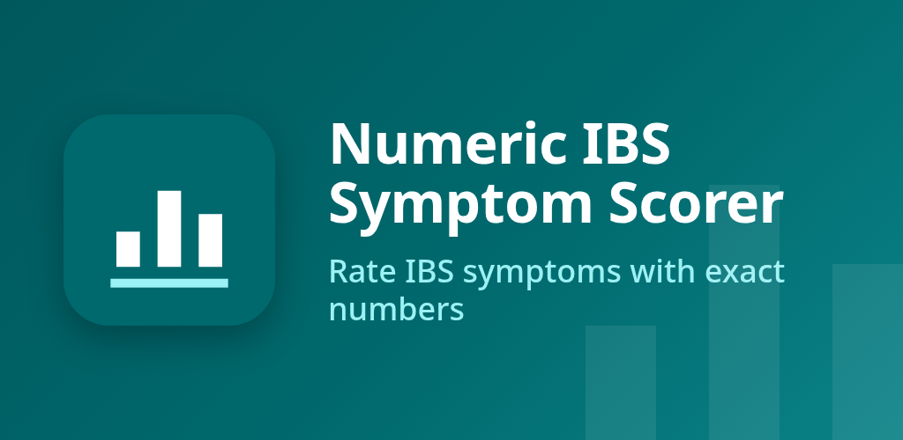

Numeric IBS Symptom Scorer
Rate IBS symptoms 0-10, log bowel movements and food, spot possible triggers.



About
Numeric IBS Symptom Scorer is a private diary for people with irritable bowel syndrome, or suspected IBS, who want clear numbers to track their symptoms for themselves or for their doctor. Exact numbers, no sliders Rate abdominal pain, bloating, gas, cramping and nausea from 0 to 10 by tapping a number or typing it. Add up to five symptoms of your own. Log as many entries per day as you like, each with an optional note. Leave a symptom unrated if you did not notice it. A proper bowel log Record each bowel movement with the Bristol stool type (drawn icons plus text), urgency from 0 to 10, complete or incomplete emptying, an optional blood or mucus flag and a note. Food log with tags Write down what you ate and add your own reusable tags, such as dairy, onion or coffee. Today view and charts See the whole day in time order and edit or delete any entry. Charts show the daily average and maximum per symptom, bowel movements per day and your Bristol type distribution over 7, 30 or 90 days or all time, with no history limit. Every chart also has a written summary. Widget and reminder The home screen widget shows today's latest scores and bowel count, with quick-add buttons. An optional daily reminder helps you keep the habit. Private by design No account, no cloud, no ads, no analytics. The app has no internet permission. Your diary is stored in an encrypted database on your phone. An optional app lock uses your fingerprint, face, screen lock or an app PIN, and screenshots of the app are blocked. Pro, a one-time purchase • Trigger report: your average score a few hours after each food tag, compared with your usual level, with the number of meals behind it. • Export a PDF report for your doctor or CSV files for any date range. • Encrypted, password-protected backup and restore, saved wherever you choose. Logging, charts, the widget, the reminder and the app lock stay free. Light and dark theme, phone and tablet layouts, and full screen reader support. This app is not medical advice and does not diagnose anything. Food links it shows are possible links only. Talk to your doctor about your symptoms.